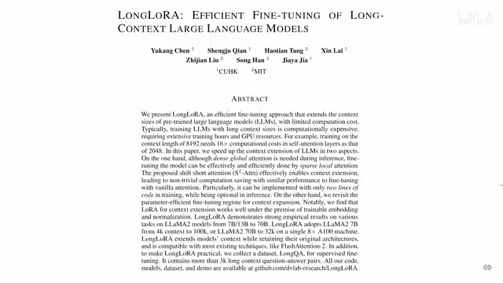
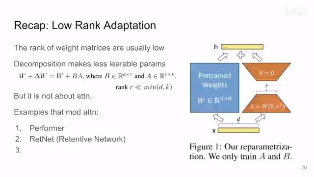
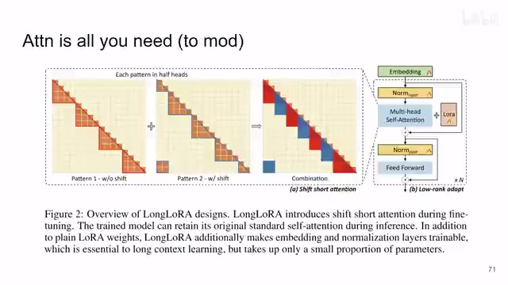
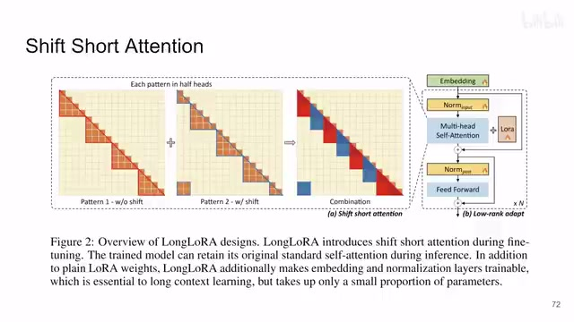
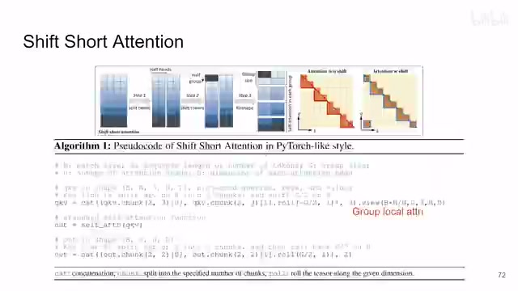
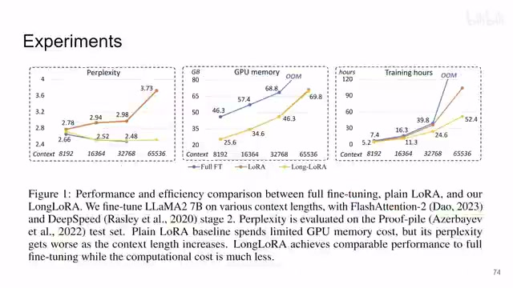
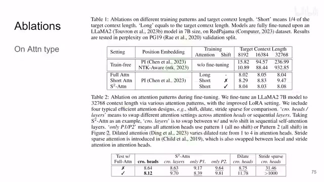
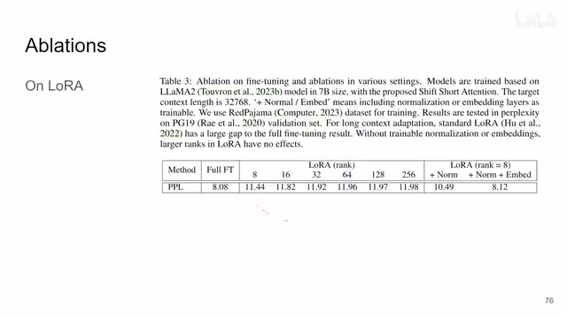
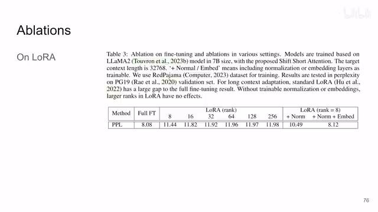

← 返回阅读库 · 原论文目录
论文讲解阅读文档 · 多模态语言模型 · v044
LongLoRA Efficient Fine-tuning of Long-Context LLMs[2309.12307]
视频时长 00:05:03；讲解文字 2,381 字符；提取讲解画面 9 张。按视频原顺序阅读，每段文字保留时间戳。
文字来自整段视频的自动语音转写，按自然停顿分段，并与 PPT / 论文页面 / 演示画面对齐。未将讲解压缩为摘要；术语、数字和口述公式请结合画面及原论文核对。 阅读稿已校正规范部分明确术语误识别；原始逐字稿和每处修改记录另行保留。
讲解画面为源视频截图（640×360），不是可编辑 PPT 文件。全片按每秒 2 帧扫描内容变化，逐步展开页保留；连续动画保留代表画面。清晰度受源视频限制。
下载完整资料包 · 含离线 HTML、PDF、Word、全部 PPT 画面和字幕。
原论文与材料
LongLoRA: Efficient Fine-tuning of Long-Context Large Language Models · 下载完整 PDF（19 页）
按时间阅读
00:00:00–00:00:54 · 画面 001

00:00:00–00:00:54 · 画面 001大家好,今天我们来快速水平论文LongLoRA: Efficient Fine-tuning of Long-Context Large Language Models 这篇论文呢它虽然用了 LoRa 但是它核心的贡献其实是一个新的 Attention 然后呢再加了这个新的 Attention 再加上这个 LoRa 之后能够达到一个训练长语句的这么一个效果同时呢相比于标准的 LoRa 标准 LoRa 它只 fine-tune 这个 Attention 里面的这个权重嘛那本文还 fine-tune 了这个 Text Embedding 还有 Normalization 那这个呢就是本文最核心的贡献
那么感谢您的收看我们继续啊那么还是我要声明一下我本人没有从事任何 NLP 方向的这个经验和背景这个视频呢只是我个人尝试的对这篇论文的一个理解那么我也建议呢你不要对这个频道的未来持有任何关于 NLP 相关关于 AIGC 相关的内容的期望好的那么我们详细来看
00:00:54–00:01:54 · 画面 002

00:00:54–00:01:54 · 画面 002首先一个快速的回顾这个 low rank adaptation 那它的原理其实非常简单就是我们已经假设因为之前有一些文章观察到这个我们训练好的特别是大的模型里面这些权重的矩阵他们通常的这个秩这个 rank 是非常低的那 rank 很低就意味着你这一个矩阵其实是可以被分解成两个相对较小的矩阵相乘的形式那么这两个小的矩阵呢他们的参数的总量加起来就要比原来的矩阵数量小这样子你只训练这两个小的矩阵就能够达到节约训练参数数量的目的但是呢 LoRA 这个东西呢就像我们一开始所说的它只是解决了参数量的问题但是实际上真正影响我们去推理长内容去训练长内容的这个瓶颈在哪里呢其实是 attention 那么当然之前在这个方向也有很多的研究了比如说很早的就有这个 performer 还有最近的这个 RetNet 本文的思想呢其实跟这个 Swin Transformer 那个 vision 里面的 Swin Transformer 非常像就是 attention
00:01:54–00:02:13 · 画面 003

00:01:54–00:02:13 · 画面 003不要做全局做局部那做局部的时候你不能永远的卡在那个局部的位置你要有一部分给它平移一下这样子呢把所有的每个小局部之间它们都能够沟通起来那本文呢把这个 multi-head attention 它的 head 按数量给它分成一半一半那么一半的 head 呢就是做标准的 local attention
00:02:13–00:02:44 · 画面 004

00:02:13–00:02:44 · 画面 004另一半呢是做这个 shift 的 attention 就是你看到它做 local 的 attention 的范围跟刚才这个正好差了一半的这个 local 的 attention 的尺寸那么这个和这个它们是做 attention 那么剩下这些它们相互做那么这两半的 head 最终合在一起就还是标准的这个 attention 那么这个呢就是本文最核心的这个 shifted sparse attention、S2 attention 结束了那我们来看到它具体的代码实现你看到首先它的尺寸 batch size sequence 的长度
00:02:44–00:03:29 · 画面 005

00:02:44–00:03:29 · 画面 005query key value 三个值然后呢 head 的数量每一个 head 下面 token 的 dimension 你先第一步沿着这个 head 的这个地方把它分成两块那么这一块它要把最后一个 local group 和第一个 local group 拼在一起做一个 shift 那么做完 shift 再接回去吧然后呢再变一个形状你可以看到呢这里的这个 sequence 的数量从 n 变成了这个 g 那你相应的 batch 的数量增加了吗那这样就是典型的把一个全局的 attention 变成一个 local 的 attention 那么然后你再做 self-attention 做完之后呢记得把你刚刚 shift 过的部分再给它 shift 回去那就结束了我们来看直接作者汇报的结果首先相对于 full fine-tuning 来说特别是对于长的序列它们的性能是比较接近的如果你直接使用 Lora 它的性能就没有这么好同时这边内存的消耗训练的时间等等这个是很直观的
00:03:29–00:03:42 · 画面 006

00:03:29–00:03:42 · 画面 00600:03:42–00:04:27 · 画面 007

00:03:42–00:04:27 · 画面 007那主要是看 ablation 这里，作者最核心的两点，一个是 Attention。你看到这个 S2 的 Attention，相对于没有 Shift 只是 group 起来的那种 Attention，它的效果还有跟全局 Attention 的对比，这是这一组。那这一组其实更有意思了，就是你 Attention 具体的设计是什么？这里你看，我们标准的设计是 Multi-Head 里面一半的 Head 做 Shift，一半的不做。那么当然，你也可以真的像 Swin Transformer 一样。
第一层不做 shift 第二层做 shift 那这样交替下去那么当然这边还有如果只有 local 如果只有这个 shift 会怎么样那这里呢作者还对比了之前的一些方法注意呢这里为什么每个方法都有两行就是你在真正训练完做推理的时候你的硬件其实可以允许你做全局的 attention 那这个呢就是是否使用全局的 attention 做推理那么关于 LoRA 的实验呢我们来看到你如果直接使用 LoRA 它肯定
00:04:27–00:05:02 · 画面 008

00:04:27–00:05:02 · 画面 008比全局 fine-tune 它的性能是有差距的但是一个更有意思的观察是你随着 LoRA rank 的增加按说你 fine-tune 的参数多了你的效果应该更好了但是并不是这样后来做着发现其实关键在于你所有的 Normalization layer你得动你一开始的这个 embedding 也得动那么当然了作者在文章中还有更详细的更加庞大的实验那么还是因为我不是从事这个方向的我就不妄自解读了好的那么以上就是我对这个论文的一个非常快速的整理那么感谢您的收看再见
00:05:02–00:05:03 · 画面 009

00:05:02–00:05:03 · 画面 009转写与来源说明 · 0 个自动复核提示
保留 14 个原始语音片段，0 个片段触发自动复核提示。提示仅用于定位可能的术语、重复或识别问题，不等于已确认错误。
讲解画面为源视频截图（640×360），不是可编辑 PPT 文件。全片按每秒 2 帧扫描内容变化，逐步展开页保留；连续动画保留代表画面。清晰度受源视频限制。
原视频：paper/合集_2026-10-16_多模态语言模型/[论文速览]LongLoRA Efficient Fine-tuning of Long-Context LLMs[2309.12307].mp4
SHA-256：7a486f7ed626ff0db536e8c954508ee02b69ddeaaa466a38848396b097f99e5b
全文按视频语音与画面制作。原论文可从上方链接下载；完整资料包保留全文、原始逐字稿、字幕和校对记录。